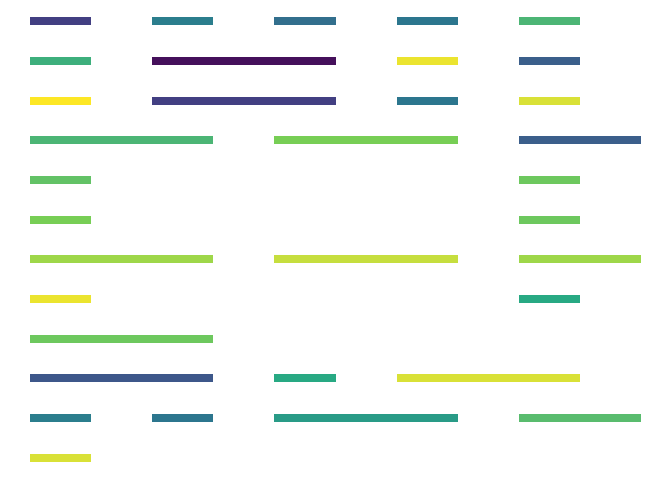

This package converts text into Morse code, in various formats suitable for graphing and making art. You probably don’t need this.
Basic usage
The basic functions all use text_to_*:
library(morsecode)
text <- "Hello I am a text"
text_to_morse_chars(text)
#> [1] ".... . .-.. .-.. --- .. .- -- .- - . -..- -"You can also turn text into binary Morse code:
text_to_morse_numeric(text)
#> [1] 1 0 1 0 1 0 1 0 1 0 1 0 1 1 1 0 1 0 1 0 1 0 1 1 1 0 1 0 1 0 1 1 1 0 1 1 1
#> [38] 0 1 1 1 0 0 0 0 0 0 0 1 0 1 0 0 0 0 0 0 0 1 0 1 1 1 0 1 1 1 0 1 1 1 0 0 0
#> [75] 0 0 0 0 1 0 1 1 1 0 0 0 0 0 0 0 1 1 1 0 1 0 1 1 1 0 1 0 1 0 1 1 1 0 1 1 1
#> [112] 0Or a data frame, suitable for graphing:
library(dplyr)
#>
#> Attaching package: 'dplyr'
#> The following objects are masked from 'package:stats':
#>
#> filter, lag
#> The following objects are masked from 'package:base':
#>
#> intersect, setdiff, setequal, union
library(ggplot2)
df <- text_to_morse_segments(text, line_length = 10)
df %>%
ggplot(aes(x = x, xend = xend, y = y, yend = yend,
color = sample(group))) +
geom_segment(size = 3, show.legend = FALSE) +
theme_void() +
scale_color_viridis_c()
Or even sound:
sound <- text_to_morse_sounds(text, pulse_duration = 0.05,
play = FALSE)
audio::play(sound, rate = 8000)